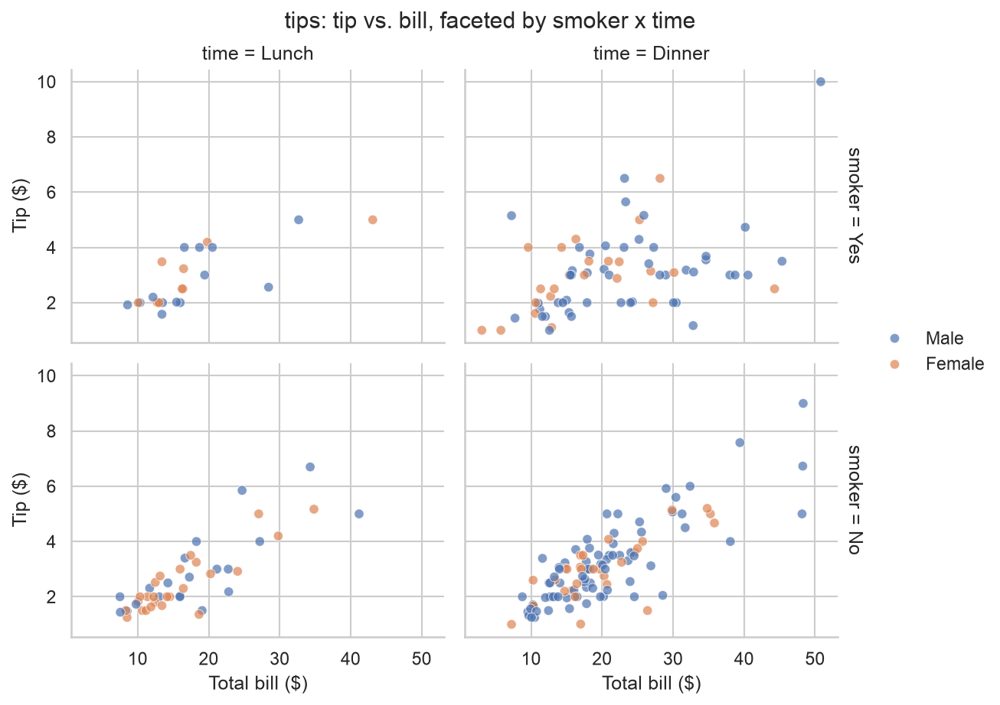
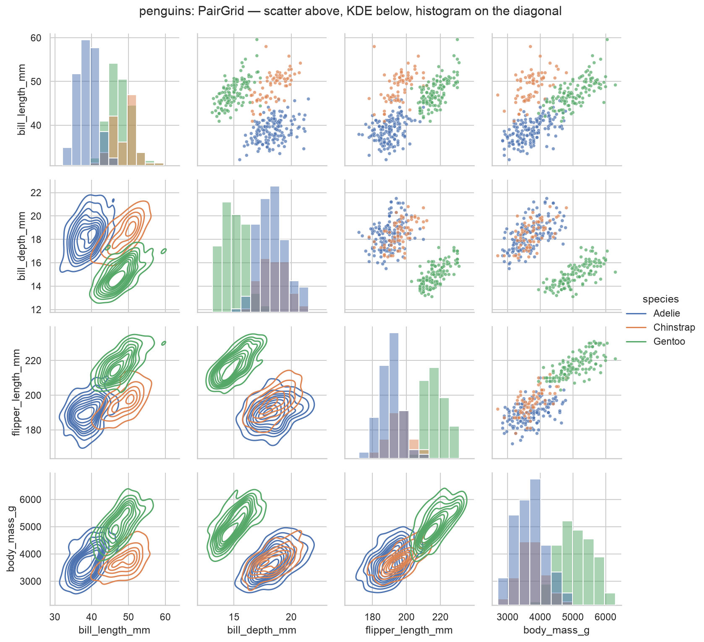
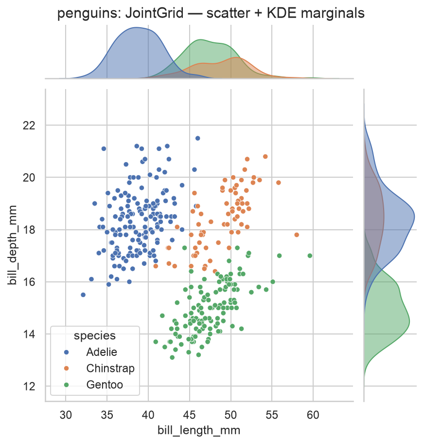
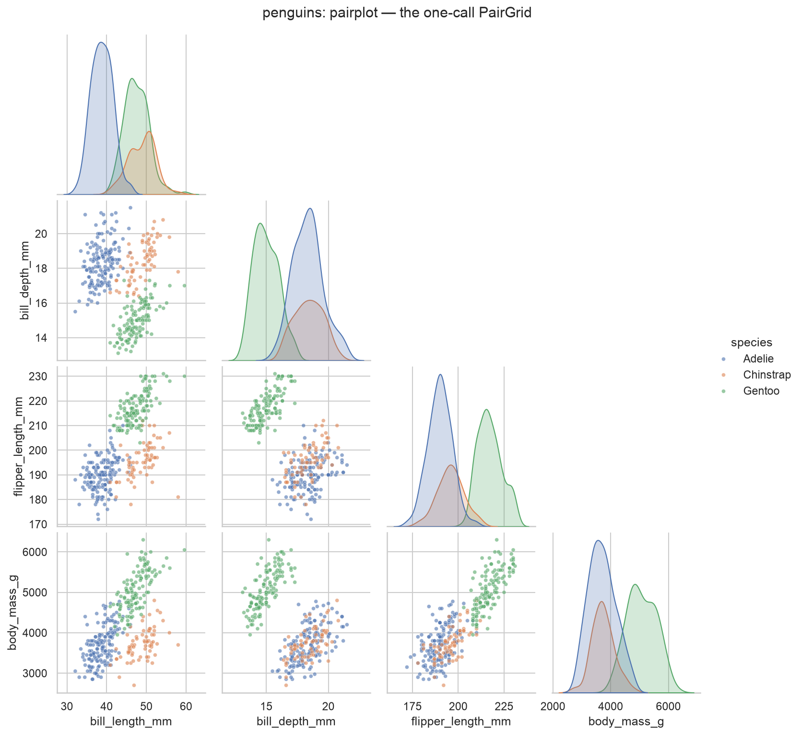
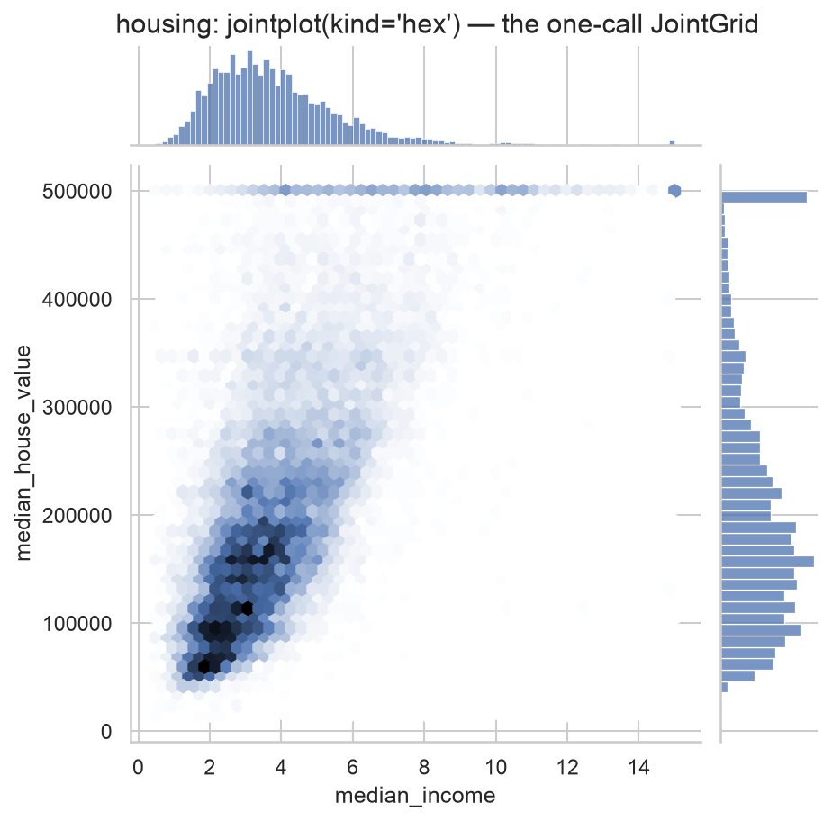

Home › 5 · Small multiples & multi-variable grids
5 · Small multiples & multi-variable grids
what happens when the same view is repeated across subsets of the data — or when you want every pairwise view of several variables at once?
| Function | Level | Dataset | In one line |
|---|---|---|---|
FacetGrid | figure | tips | hand-built grid: .map() any plot across rows / columns |
PairGrid | figure | penguins | every variable vs every other, different plot per region |
JointGrid | figure | penguins | a bivariate plot plus its marginal distributions |
pairplot | figure | penguins | the one-call version of PairGrid |
jointplot | figure | california_housing | the one-call version of JointGrid |
the three *Grid classes are the manual engines; pairplot and jointplot are their one-line shortcuts, shown right after so the trade-off is visible. Each ends by saving a PNG to images/.
Imports for this notebook
import matplotlib.pyplot as plt
import pandas as pd
import seaborn as sns
from load_data import load_data
sns.set_theme(style="whitegrid")
tips = sns.load_dataset("tips")
penguins = sns.load_dataset("penguins")
housing = load_data("california_housing")
PENGUIN_NUM = ["bill_length_mm", "bill_depth_mm", "flipper_length_mm", "body_mass_g"]
FacetGrid
Figure-level. Build an empty grid keyed by row / col, then .map() (or
.map_dataframe()) a plotting function onto every panel. The engine behind
relplot / displot / catplot.

g = sns.FacetGrid(
tips, row="smoker", col="time",
margin_titles=True, height=3, aspect=1.3,
)
g.map_dataframe(sns.scatterplot, x="total_bill", y="tip", hue="sex", alpha=0.7)
g.add_legend()
g.set_axis_labels("Total bill ($)", "Tip ($)")
g.figure.suptitle("tips: tip vs. bill, faceted by smoker x time", y=1.02)
Best for
- Small multiples of a plot the figure-level wrappers don't offer, or when you want to layer several
.map()calls on the same grid. margin_titles=True,col_wrap=,sharex/sharey,despine=for the usual adjustments.- Not needed when
relplot/displot/catplotalready draw what you want — those are aFacetGridwith a friendlier signature and a managed legend.
PairGrid
Figure-level. A square grid of every variable against every other, with the upper triangle, lower triangle and diagonal each controlled separately.

g = sns.PairGrid(penguins, vars=PENGUIN_NUM, hue="species", diag_sharey=False)
g.map_upper(sns.scatterplot, s=15, alpha=0.7)
g.map_lower(sns.kdeplot)
g.map_diag(sns.histplot)
g.add_legend()
g.figure.suptitle("penguins: PairGrid — scatter above, KDE below, histogram on the diagonal", y=1.02)
Best for
- Choosing a different plot per region: raw scatter above the diagonal, smoothed density below, a 1-D distribution on it (
map_upper/map_lower/map_diag). - Any per-cell plot
pairplotdoesn't expose. - Not the quick route (that's
pairplot), and it turns into a wall of tiny panels past ~6–8 variables.
JointGrid
Figure-level. One central bivariate plot with a marginal distribution on each axis — the joint layer and the marginal layers set independently.

g = sns.JointGrid(data=penguins, x="bill_length_mm", y="bill_depth_mm", hue="species", height=6)
g.plot_joint(sns.scatterplot, s=25)
g.plot_marginals(sns.kdeplot, fill=True, alpha=0.5)
g.figure.suptitle("penguins: JointGrid — scatter + KDE marginals", y=1.01)
Best for
- A scatter (or any bivariate plot) where you also want to see each variable's own distribution, and the joint / marginal layers need different functions or extra layers (a regression plus a rug, say).
plot_jointandplot_marginalstake any seaborn or matplotlib function.- Not worth the extra lines for a standard scatter-plus-histogram —
jointplotdoes that in one call.
pairplot
Figure-level. The one-call PairGrid: a scatter matrix with a distribution on
the diagonal. corner=True drops the redundant upper half.

g = sns.pairplot(
penguins, vars=PENGUIN_NUM, hue="species",
diag_kind="kde", corner=True,
plot_kws={"s": 15, "alpha": 0.6},
)
g.figure.suptitle("penguins: pairplot — the one-call PairGrid", y=1.02)
Best for
- The fastest way to eyeball every pairwise relationship and every one-variable distribution at once, split by
hue. diag_kind="hist" | "kde",kind="scatter" | "reg",corner=True.- Not customisable past its keywords — move to
PairGridwhen you hit that wall — and impractical for many variables.
jointplot
Figure-level. The one-call JointGrid: kind= sets the central plot, the
marginals follow automatically.

g = sns.jointplot(
data=housing, x="median_income", y="median_house_value",
kind="hex", height=6,
)
g.figure.suptitle("housing: jointplot(kind='hex') — the one-call JointGrid", y=1.01)
Best for
- A quick bivariate view with marginals:
kind="scatter" | "kde" | "hist" | "hex" | "reg". kind="hex"(here) is the one to use at large N — it bins the points into a density instead of an unreadable blob, and the $500k value cap shows up as a bright horizontal band.- Not for more than one grouping, or bespoke joint / marginal layers — that's
JointGrid.